Instalación e Configuración de HexStrike AI + Claude Code en Kali Linux
Sección
Categoría: Apuntamentos — Ferramentas de Laboratorio
Aplicable a: Todas as prácticas de pentesting web con HexStrike AI
Sistema operativo: Kali Linux (atacante) — IP 10.0.2.250
Que é HexStrike AI?
HexStrike AI é un servidor MCP (Model Context Protocol) avanzado que permite que axentes de IA como Claude executen de forma autónoma máis de 150 ferramentas de ciberseguridade. Actúa como ponte entre a linguaxe natural e as ferramentas reais do sistema operativo (nmap, ffuf, hydra, sqlmap, hashcat...).
O fluxo de traballo é o seguinte:
- O alumno escribe en linguaxe natural dentro de Claude Code.
- Claude Code comunícase con
hexstrike_mcp.pymediante o protocolo MCP. - O cliente MCP chama ao servidor
hexstrike_server.py(API REST en localhost:8888). - O servidor executa a ferramenta de Kali axeitada e devolve o resultado.
- Claude interpreta os resultados e propón o seguinte paso.
Infraestrutura do laboratorio
PASO 1 — Actualización do sistema e ferramentas base
Abre un terminal en Kali Linux e executa:
# Actualizar o sistema
sudo apt update && sudo apt full-upgrade -y
# Instalar ferramentas necesarias para as prácticas
sudo apt install -y \
nmap ffuf hashcat curl \
python3 python3-pip python3-venv \
seclists tmux git
# Verificar que a wordlist de contrasinais está dispoñible
ls /usr/share/wordlists/seclists/Passwords/Common-Credentials/2020-200_most_used_passwords.txt
Resultado esperado
O comando ls debe mostrar o arquivo. Se non existe:
PASO 2 — Instalación de HexStrike AI
Opción A — Desde apt (recomendada)
Verifica que os dous compoñentes quedaron instalados:
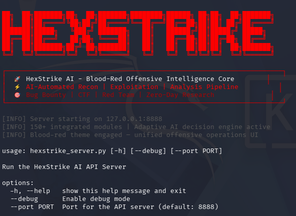
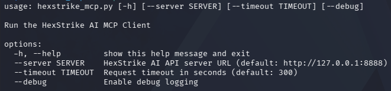
Opción B — Desde o repositorio GitHub
git clone https://github.com/0x4m4/hexstrike-ai.git ~/hexstrike-ai
cd ~/hexstrike-ai
python3 -m venv hexstrike-env
source hexstrike-env/bin/activate
pip3 install -r requirements.txt
Referencia oficial
Repositorio: https://github.com/0x4m4/hexstrike-ai
Vídeo de instalación: YouTube — HexStrike AI Installation & Demo
PASO 3 — Instalación de Claude Code
Claude Code é o cliente oficial de Anthropic que se executa no terminal e que usaremos como interface de IA para controlar HexStrike.
A partir de 2025, Claude Code instálase cun script nativo oficial que non require Node.js nin npm — xestiona as súas propias dependencias e actualízase automaticamente en segundo plano.
Seguridade: revisa o script antes de executalo
O patrón curl | bash executa código remoto directamente. Como boa práctica, especialmente nun contorno de pentesting, descarga e revisa o script antes de executalo:
# 1. Descargar o script
curl -fsSL https://claude.ai/install.sh -o install_claude.sh
# 2. Revisar o contido
cat install_claude.sh
# 3. Executar só se o contido é de confianza
bash install_claude.sh
O script execútase sen sudo e instala Claude Code no directorio do usuario, non a nivel de sistema.
# Instalación directa (método rápido oficial para macOS, Linux e WSL)
curl -fsSL https://claude.ai/install.sh | bash
Documentación oficial
Método alternativo: repositorio oficial de Anthropic
A documentación oficial menciona instalación con apt engadindo o repositorio de Anthropic. Con todo, en Kali Linux 2026.1 este paquete non está dispoñible nos repositorios estándar, polo que o método do script install.sh é o único verificado como funcional neste contorno.
Se queres comprobar se está dispoñible na túa versión:
PASO 4 — Autenticación de Claude Code co Plan Pro
Importante — Non usar API Key
Se tes configurada a variable ANTHROPIC_API_KEY no sistema, Claude Code usará facturación por API (pay-per-token) en lugar do Plan Pro incluído. Para garantir que se usa o Plan Pro sen custos adicionais:
Autentica Claude Code coa túa conta de claude.ai (Plan Pro):
Segue o proceso no navegador usando as túas credenciais de Claude.ai. Non engadas credenciais de Claude Console durante o proceso.
Aparecerá no navegador a pantalla de autorización OAuth. É o paso normal de autenticación na primeira execución de claude ou claude login. Simplemente fai clic en "Authorize".
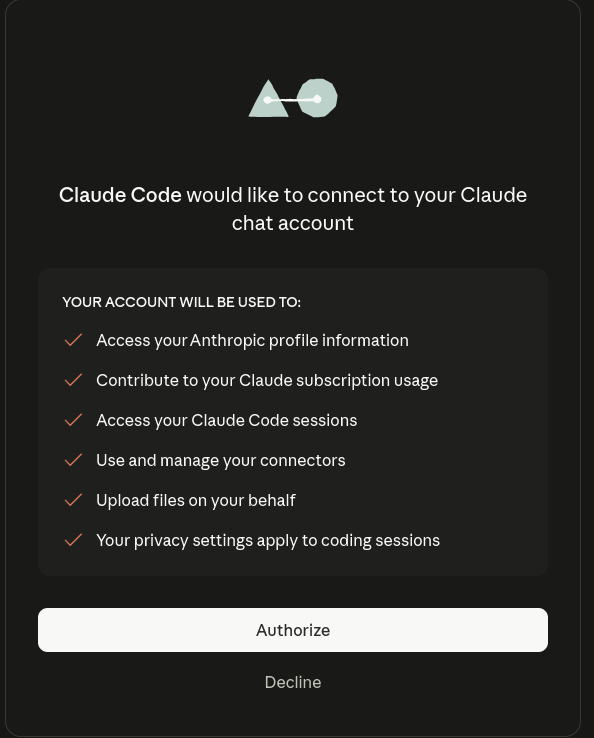
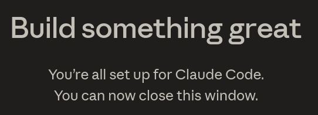
O que ocorre nese momento:
- Claude Code conecta coa túa conta de claude.ai
- Consume o uso do teu Plan Pro (non da API)
- A sesión queda autenticada no sistema — non terás que repetilo en cada uso
O que significan os permisos que se mostran:
| Permiso | Para que serve |
|---|---|
| Access your Anthropic profile information | Identificar a túa conta e plan |
| Contribute to your Claude subscription usage | Descontar o uso do teu Plan Pro |
| Access your Claude Code sessions | Xestionar as sesións do terminal |
| Use and manage your connectors | Permitir os servidores MCP como HexStrike |
| Upload files on your behalf | Subir ficheiros ao contexto de Claude |
| Your privacy settings apply to coding sessions | Aplicar a túa configuración de privacidade |
Non fagas clic en Decline
Se rexeitas, Claude Code non poderá autenticarse e non funcionará.
Plan Pro e Claude Code
O Plan Pro inclúe Claude Code no terminal. Os límites de uso son compartidos entre claude.ai (web) e Claude Code (terminal). Para as prácticas de laboratorio — sesións curtas con comandos acotados — o Plan Pro é suficiente.
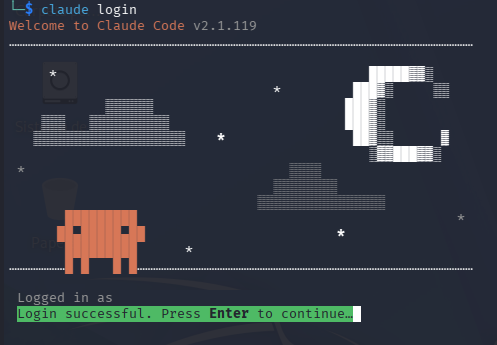
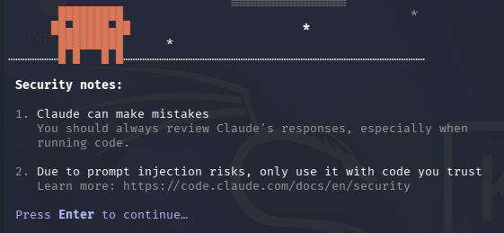
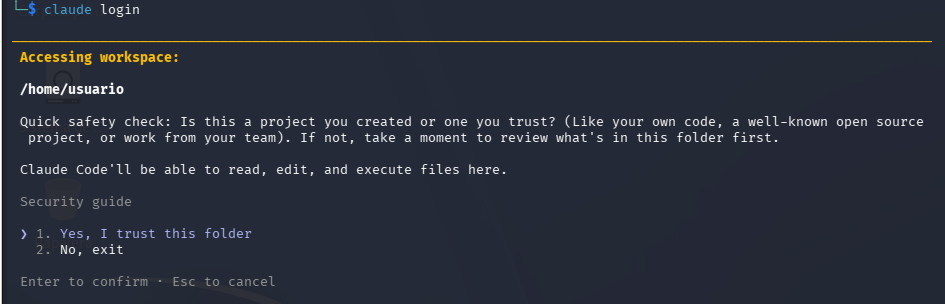
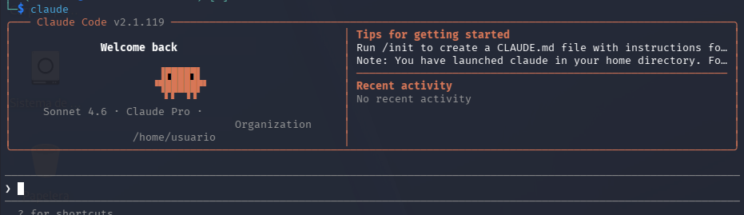
Saír de momento da sesión de claude:
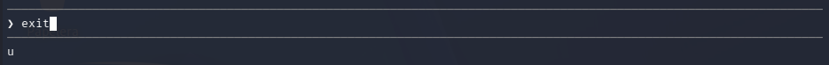
PASO 5 — Configurar HexStrike AI como servidor MCP
En Claude Code 2.x, os servidores MCP rexístranse mediante o comando claude mcp add desde o terminal — non editando ficheiros JSON manualmente. A configuración gárdase automaticamente en ~/.claude.json.
Executa este comando no terminal (fóra de Claude Code):
Para Opción A (apt) — hexstrike_mcp está no PATH:
claude mcp add --transport stdio hexstrike-ai --scope user \
-- hexstrike_mcp --server http://127.0.0.1:8888
Para Opción B (GitHub) — apunta ao script Python:
claude mcp add --transport stdio hexstrike-ai --scope user \
-- python3 /home/usuario/hexstrike-ai/hexstrike_mcp.py --server http://127.0.0.1:8888
Resultado esperado
Verifica que quedou rexistrado correctamente:
Parámetros do comando
| Parámetro | Significado |
|---|---|
--transport stdio |
HexStrike comunícase por stdio co cliente MCP |
--scope user |
Dispoñible en todos os proxectos do usuario |
hexstrike-ai |
Nome do servidor MCP |
-- |
Separador entre opcións de Claude e o comando do servidor |
hexstrike_mcp --server http://127.0.0.1:8888 |
Comando que arranca o cliente MCP |
Ficheiro de configuración
Claude Code garda a configuración en ~/.claude.json. Non é necesario editar este ficheiro manualmente. Para eliminar o servidor usa claude mcp remove hexstrike-ai.
PASO 6 — Arrancar o servidor HexStrike AI
Antes de usar Claude Code en cada sesión de prácticas, o servidor HexStrike debe estar en execución. Úsase tmux para manter a sesión activa en segundo plano mentres se traballa.
Se instalaches con apt (Opción A) — recomendada
O comando hexstrike_server está dispoñible directamente no PATH:
# Con tmux en segundo plano (recomendado)
tmux new-session -d -s hexstrike -n servidor
tmux send-keys -t hexstrike:servidor "hexstrike_server" C-m
tmux attach -t hexstrike # Ctrl+B, D para desconectar sen deter
Se instalaches desde GitHub (Opción B)
É necesario activar primeiro o entorno virtual Python:
# Con tmux en segundo plano
tmux new-session -d -s hexstrike -n servidor
tmux send-keys -t hexstrike:servidor \
"cd ~/hexstrike-ai && source hexstrike-env/bin/activate && python3 hexstrike_server.py" \
C-m
tmux attach -t hexstrike
# Ou nun terminal dedicado
cd ~/hexstrike-ai
source hexstrike-env/bin/activate
python3 hexstrike_server.py
Debes ver a pantalla de arranque:
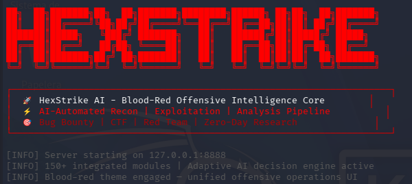
...
[INFO] Server starting on 127.0.0.1:8888
[INFO] 150+ integrated modules | Adaptive AI decision engine active
Verificar que o servidor responde
Primeiro instala jq se non está dispoñible:
A saída é JSON en bruto e difícil de ler. Para unha visualización máis amigable:
# Resumo rápido: estado, versión, ferramentas e recursos do sistema
curl -s http://localhost:8888/health | jq '{
estado: .status,
mensaxe: .message,
version: .version,
uptime_min: (.uptime_seconds / 60 | round),
ferramentas: {
dispoñibles: .total_tools_available,
total: .total_tools_count
},
categorias: .category_stats,
sistema: .telemetry.system_metrics,
execucions: {
total: .telemetry.commands_executed,
exito: .telemetry.success_rate,
tempo_medio: .telemetry.average_execution_time
}
}'
Resultado esperado
{
"all_essential_tools_available": true,
"message": "HexStrike AI Tools API Server is operational",
"status": "healthy",
"version": "6.0.0",
"total_tools_available": 78,
"total_tools_count": 127,
"telemetry": {
"average_execution_time": "0.01s",
"commands_executed": 222,
"success_rate": "35.1%",
"system_metrics": {
"cpu_percent": 1.5,
"disk_usage": 30.6,
"memory_percent": 13.0
}
},
"category_stats": {
"essential": { "available": 8, "total": 8 },
"web_security": { "available": 13, "total": 19 },
"network": { "available": 9, "total": 10 },
"password": { "available": 4, "total": 5 },
"wireless": { "available": 4, "total": 4 }
}
}
O servidor está operativo cando "status": "healthy". O resto dos campos indican:
| Campo | Significado |
|---|---|
all_essential_tools_available |
true — as ferramentas imprescindibles están listas |
total_tools_available |
Ferramentas de Kali realmente instaladas e listas |
total_tools_count |
Total de ferramentas que HexStrike soporta |
category_stats.essential |
Debe ser 8/8 — son as imprescindibles para as prácticas |
telemetry.success_rate |
Taxa de éxito dos comandos (os fallos son maiormente chequeos de ferramentas non instaladas) |
system_metrics.cpu_percent |
Consumo de CPU do servidor (debe ser baixo) |
# Ver só as ferramentas relevantes para as prácticas de DVWA
curl -s http://localhost:8888/health | jq '.tools_status |
to_entries |
map(select(.key | test("ffuf|hydra|nmap|sqlmap|nikto|gobuster|hashcat|john|burpsuite|xsser|wfuzz|zaproxy|dirb|dirsearch"))) |
from_entries'
Ferramentas non dispoñibles (false)
As ferramentas que aparecen como false simplemente non están instaladas en Kali — non é un erro. HexStrike soporta 127 ferramentas pero non todas son necesarias. Para as prácticas de DVWA todas as relevantes están dispoñibles.
PASO 7 — Arrancar Claude Code con HexStrike activo
# Crear o directorio de traballo para as prácticas (só a primeira vez)
mkdir -p ~/dvwa-lab && cd ~/dvwa-lab
# Arrancar Claude Code
# HexStrike MCP cargará automaticamente ao iniciar
claude
Verificar que HexStrike MCP está conectado
Dentro de Claude Code, escribe:
Debe aparecer hexstrike-ai na lista de servidores MCP activos con estado connected.
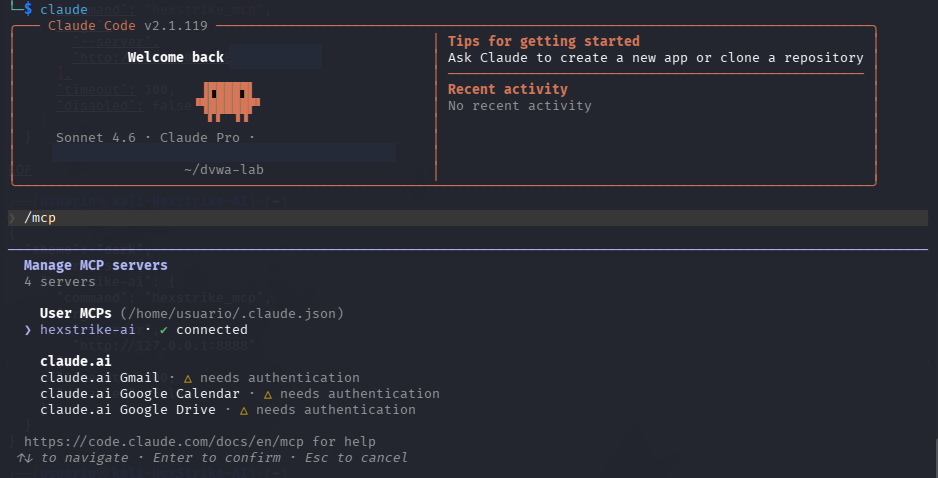
Agora cando executas claude
- Claude Code arranca e le automaticamente o ficheiro
~/.config/claude/claude_desktop_config.json - Atopa a entrada
hexstrike-aie tenta conectar co servidor MCP definido nela - Como o servidor HexStrike xa está en execución en
localhost:8888, a conexión establécese de inmediato - Claude Code queda listo para usar HexStrike como ferramenta
É exactamente como ter un enchufe e un aparato xa conectado á corrente — ao arrincar Claude Code simplemente "detecta" que HexStrike está aí e úsao.
Podes verificalo nada máis entrar en Claude Code escribindo /mcp — debería aparecer hexstrike-ai con estado connected sen ter que facer nada máis.
O único requisito é que a orde importa: HexStrike debe estar en execución antes de arrancar Claude Code. Se arrancas Claude Code primeiro e logo HexStrike, a conexión MCP non se establecerá automaticamente e terás que reiniciar Claude Code.
Executar comandos do sistema desde dentro de Claude Code
Non é necesario saír de Claude Code para executar comandos no terminal. Usa o prefixo !:
Ou simplemente pídelle a Claude Code que execute calquera tarefa en linguaxe natural e el lanzará os comandos necesarios.
Exemplo
Pregunta:
❯ En que consiste DVWA? Sé escueto na resposta. Responde en galego.
Resposta:
● DVWA (Damn Vulnerable Web Application) é unha aplicación web PHP/MySQL deliberadamente vulnerable, deseñada para practicar técnicas de pentesting nun entorno legal e controlado. Cobre vulnerabilidades como SQLi, XSS, CSRF, File Inclusion e Command Injection, con niveis de dificultade axustables (Low/Medium/High/Impossible).
Saír de Claude Code
Para saír escribe exit ou preme Ctrl+C. Verás o seguinte mensaxe — é normal:
A autenticación é persistente — non precisas facer login cada vez
A sesión co Plan Pro gárdase de forma permanente no sistema. A próxima vez que necesites Claude Code simplemente executa claude no terminal — non é necesario repetir claude login. O fluxo de uso diario é:
Resumo do fluxo de arranque
Cada vez que se traballe no laboratorio, a orde de arranque é sempre a mesma:
# 1. Arrancar o servidor HexStrike (Terminal 1 ou tmux)
# → Se instalaches con apt (Opción A):
hexstrike_server
# → Se instalaches desde GitHub (Opción B):
cd ~/hexstrike-ai && source hexstrike-env/bin/activate && python3 hexstrike_server.py
# 2. Arrancar Claude Code (Terminal 2)
cd ~/dvwa-lab && claude
Referencia rápida de comandos dentro de Claude Code
| Comando | Descrición |
|---|---|
/mcp |
Lista os servidores MCP conectados e o seu estado |
/status |
Mostra o estado da sesión e o uso de tokens |
/help |
Axuda xeral de Claude Code |
Ctrl + C |
Cancelar a execución dunha tarefa en curso |
exit |
Saír de Claude Code |
Estrutura de ficheiros relevantes
Opción A (apt) — instalación do sistema:
/usr/bin/hexstrike_server ← Comando do servidor (no PATH)
/usr/bin/hexstrike_mcp ← Comando do cliente MCP (no PATH)
~/.config/claude/
└── claude_desktop_config.json ← Configuración MCP de Claude Code
~/dvwa-lab/ ← Directorio de traballo das prácticas
Opción B (GitHub) — instalación manual:
~/hexstrike-ai/
├── hexstrike_server.py ← Servidor API (porto 8888)
├── hexstrike_mcp.py ← Cliente MCP para Claude
├── hexstrike-env/ ← Entorno virtual Python
└── requirements.txt
~/.config/claude/
└── claude_desktop_config.json ← Configuración MCP de Claude Code
~/dvwa-lab/ ← Directorio de traballo das prácticas
Resolución de problemas habituais
O servidor HexStrike non arranca
# Comprobar que o porto 8888 non está ocupado
ss -tlnp | grep 8888
# Liberar o porto se é necesario
kill $(lsof -t -i:8888)
Claude Code non detecta HexStrike MCP
# Verificar que o ficheiro JSON é válido
python3 -c "
import json, os
path = os.path.expanduser('~/.config/claude/claude_desktop_config.json')
json.load(open(path))
print('JSON válido')
"
# Reiniciar Claude Code tras calquera cambio no ficheiro
Erro de autenticación ao facer claude login
Claude Code usa API Key en vez do Plan Pro